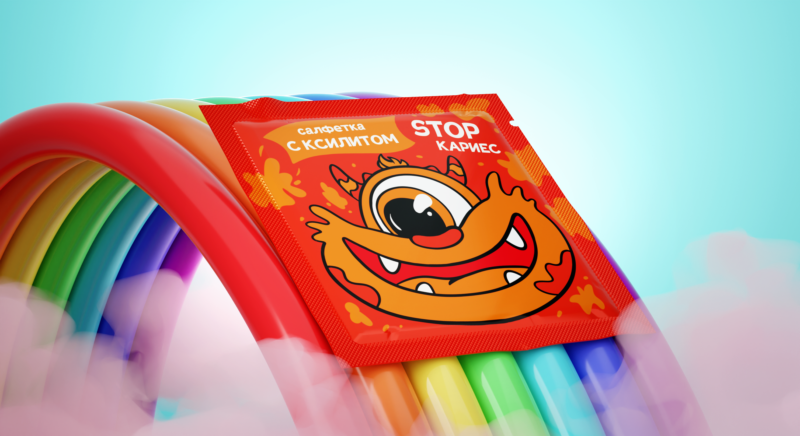
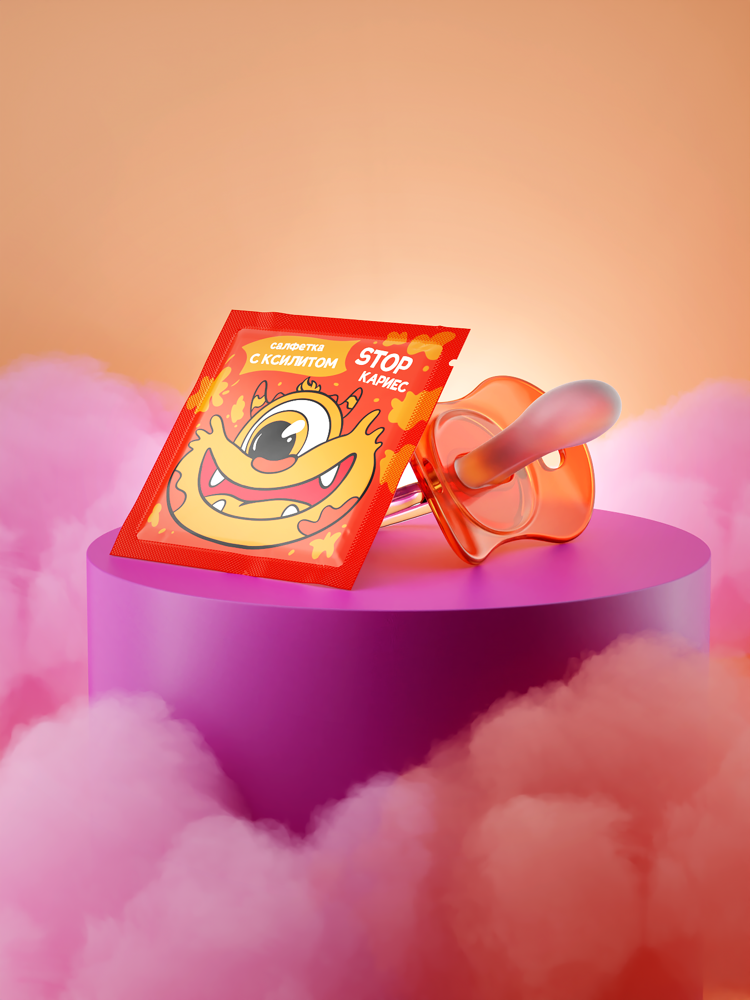
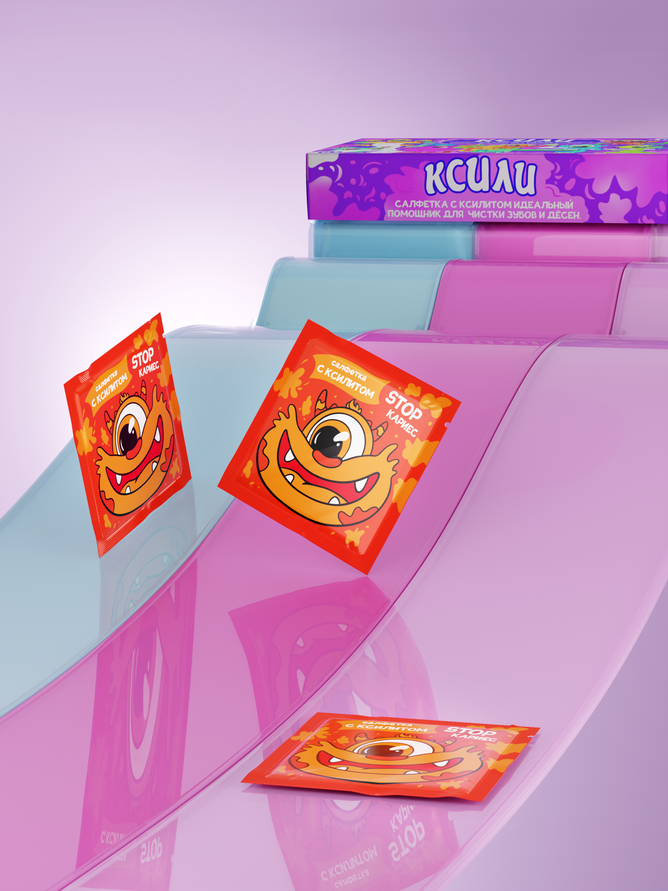
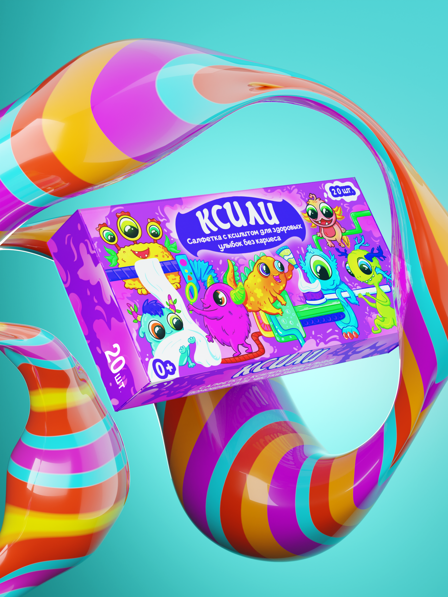
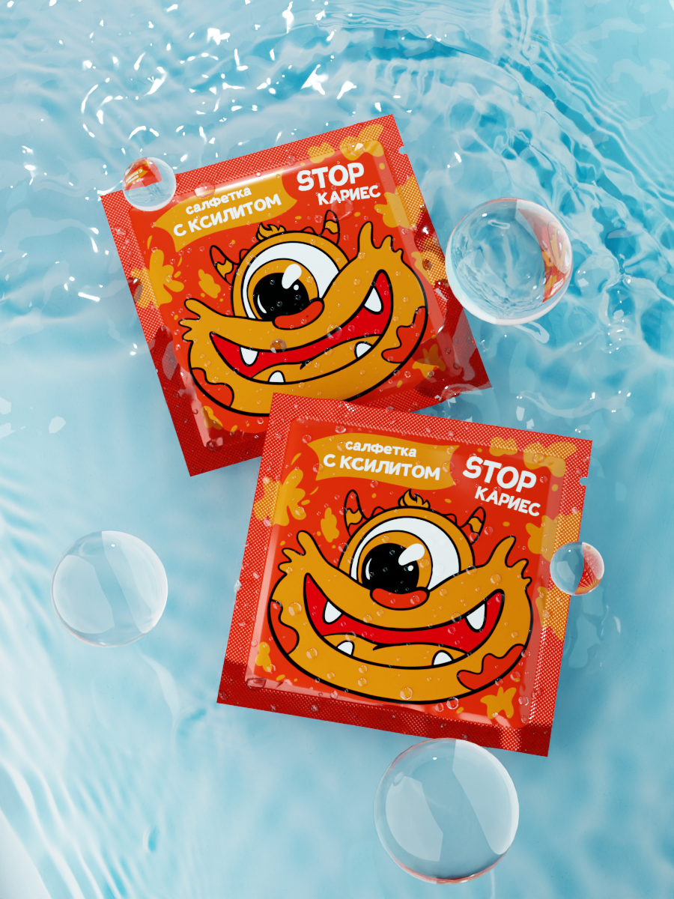
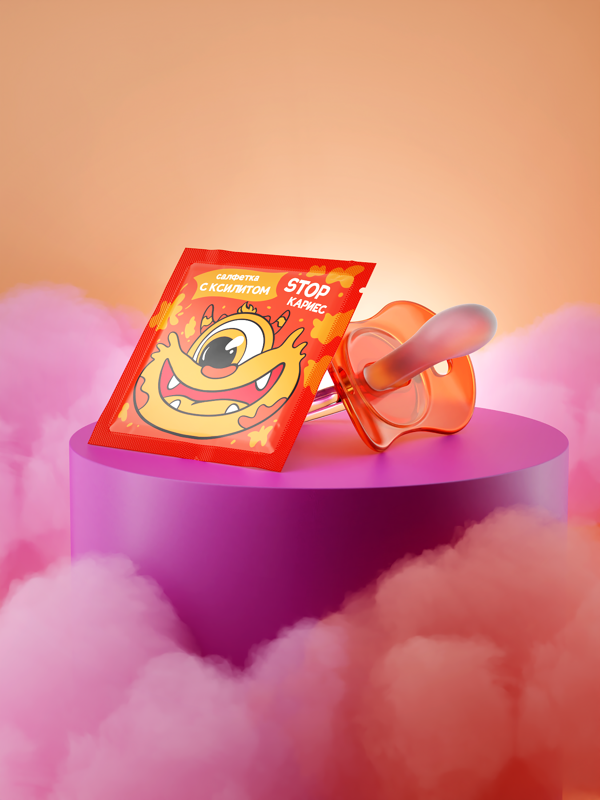
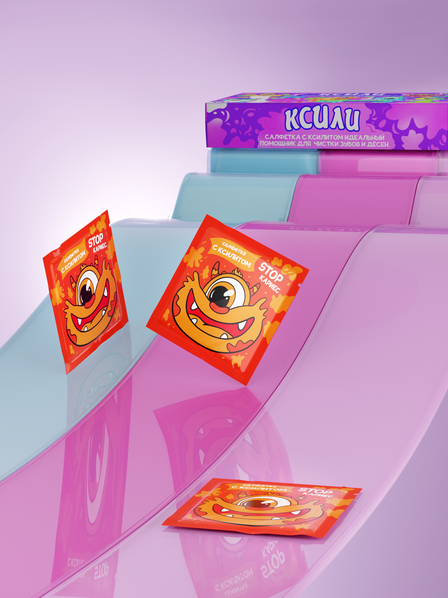
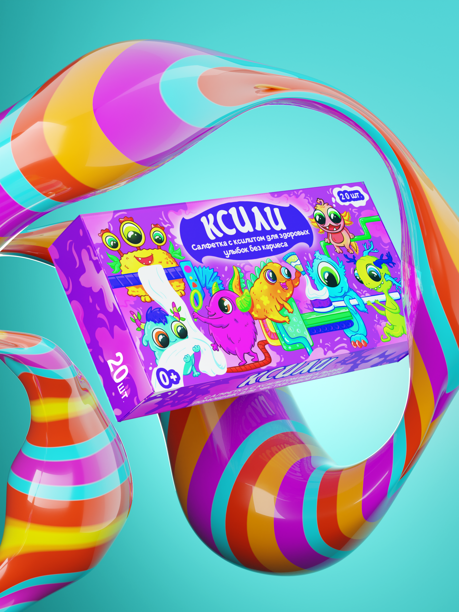
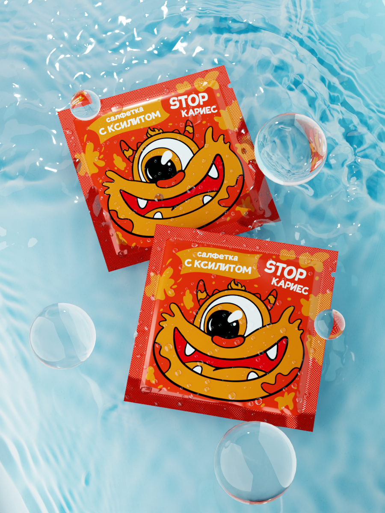

Ksili is a company dedicated to nurturing healthy smiles in the youngest generation. They aim to provide gentle and effective oral tissues infused with xylitol, a natural sweetener known for its dental benefits. Designed specifically for delicate baby gums and emerging teeth, their oral tissues offer a soothing and cleansing solution. Xylitol, with its proven ability to combat bacteria and promote oral health, forms the cornerstone of our products.
My goal in this project was to collaboratively work with a start-up brand to visually articulate their concept through CGI imagery for effective marketplace utilization. Through in-depth discussions and a comprehensive understanding of their vision, I aimed to create a compelling visual direction that not only showcased their product but also resonated with their target audience.
 







I worked collaboratively with the team to create a visual concept emphasizing their unique selling propositions for every image placed on their e-commerce platform.